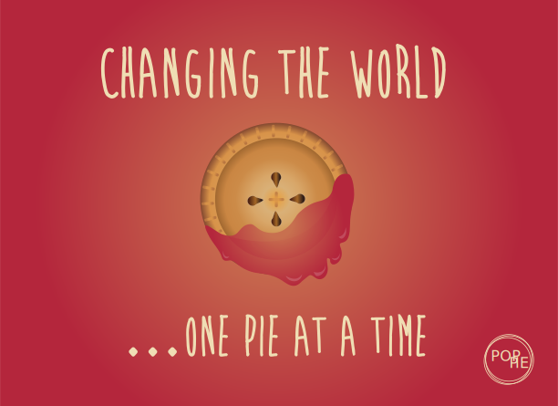

OUR PIES JUST MIGHT
CHANGE YOUR LIFE
Don't believe it? Stop by our store in Byward and try a slice of our famous Chocolate Cream Pie to see for yourself! Each POP PIE is crafted in-house and baked fresh every morning so that each bite is perfectly divine.
Top POP PIES
The Votes Are In!
In January 2014 we participated in Ottawa's International Pie Tasting Competition in Byward Market. Local pie connoisseurs voted on our top ten pie flavours. Did your favourite make the list?
Click here for our top flavours!
- Lemon Chiffon Pie
- Chocolate Versace Pie
- Roasted Ratatouille Pie
- Canadian Maple Bacon Pie
- Teriyaki Chicken Pie
- Steak & Brie Pie
- Zucchini Pot Pie
- Wildberry Apple Pie
- Garden Mint & Lamb Pie
- Sweet & Sour Pork Pie
EACH PIE WE BAKE IS A WORK OF ART
Artisan Pies
At POP PIE we believe that pie making is a craft. That being said, we believe that each and every pie we create is a delectable masterpiece! Our POP PIE chefs are artistic artisans – but instead of paints and canvas, they have dough and an infinate combination of flavourful fillings guaranteed to make your mouth water!
About POP PIE
POP PIE is an organic pie shop located in Ottawa's Byward Market. We are proud to offer over 180 flavours of unique gourmet pies.
POP PIES in the Community
We believe that great pies can make our local community a better place. That's why POP PIE bakes and delivers 50 fresh pies to local shelters and community organizations every week.
Word on the Street
Here's some of the things celebrities have been saying about POP PIE?
POP PIE changed my life! I regularly have my favourite pies delivered to me on set.– Ryan Gosling
I don't know how I lived before POP PIE. I visit Ottawa as often as possible just for the pies.– Barack Obama
POP PIES make me feel bright… like a diamond– Rihanna
We Believe …
We believe that our pies at POP PIE are a metaphor for life; while many pies might look the same on the outside, you can't tell the true quality of a pie until you take that first bite…
POP PIE Philosophy
In life, and with pies, sometimes you have to take a laep of faith: accept that new job, try that hollywood hairdo, sample the new pie baked with corn and bacon and maple syrup! Life is about adventure, and so are POP PIES! So take a chance and try something new today!
We are all searching for the perfect slice of pie
Contact Us
Grab your buddies and follow your nose to the most delicious spot in Canada's Capital!
- Pop by: #100, 1001 Byward Market
- Call us: 613-POP-PIE
- Email us: pop@pie.ca
- Facebook: Pop Pie Ottawa
- Twitter: Pop_Pie